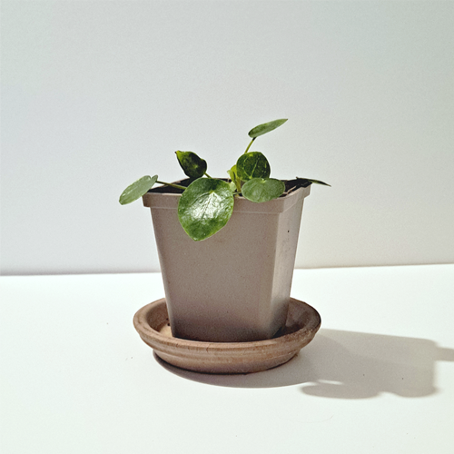
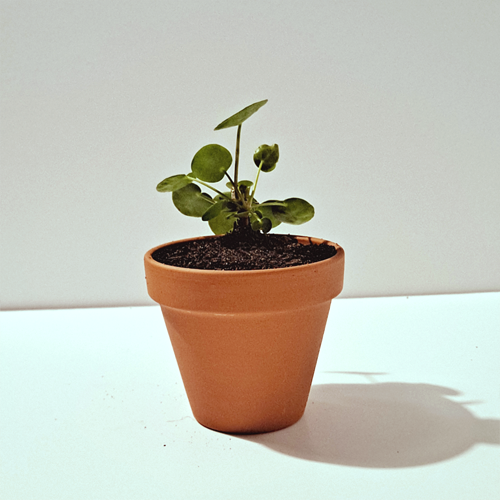
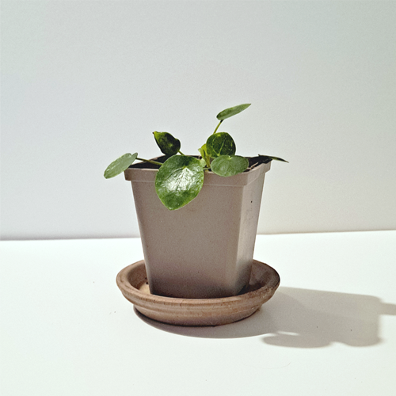
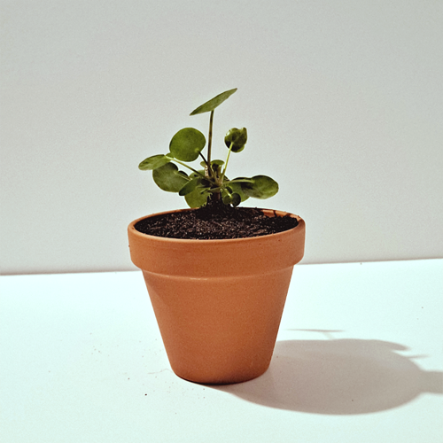

Hello! This website is a catalogue of my growing Chinese Money Plant collection. Chinese Money Plants (Pilea Peperomioides) are a type of flower in the nettle family, originating in Southern China. They’re commonly called Money Plants for their large coin-shaped leaves.
The Chinese Money Plant is evergreen and perennial, and grows to a height of about 30cm in the wild.
Chinese Money Plants are rare in the wild, but are a common house plant due to their fast growth and the fact that they’re easy to care for – a Chinese Money Plant only needs watering roughly once every 3 days: as a general rule, if the surface of the soil feels dry to the touch, it’s time to water. Chinese Money Plants like to be moist, but not too wet. It’s important to allow the plant to drain away excess water to avoid root rot. If a Chinese Money Plant is neglected and dries out completely, it’ll likely go dormant and retract into its pot rather than dying.
Chinese Money Plants can be quite mineral-hungry – a commercially available Cactus Soil will provide adequate Nitrogen and help drain the plant with its added Silica. A terracotta pot is ideal to house a Chinese Money Plant, as the absorbent surface will assist in keeping the soil moist, but not wet. Occasional feeding with a Cactus Nutrient mix will provide plenty of minerals, keeping the plant as healthy as possible – yellowing leaves suggests a lack of nitrogen in the soil.
Chinese Money Plants are susceptible to a few aphid species, such as greenfly and whitefly. An aphid infestation can damage the plant and cause mutation in the leaves, and should be dealt with as soon as possible. Gentle pesticides can be used sparingly, but an alternative is too remove the plant from the pot, wash off the plant with clean water to remove the soil and any aphid eggs stuck to the leaves, and re-pot the plant. It’s a good idea to quarantine an infected plant away from others, to avoid cross contamination. Twisted and unusually dark leaves are often a symptom of aphid infestation – you may also see sections of the leaves missing, with a sort of white webbing in the hole. Mutated or damaged leaves should be removed, or cropped to remove infected sections. It’s possible that the leaf bud in the centre of the plant may be mutated – if so, take a clean sharp knife or scissors, and remove the bud above the highest level of leaves; Once the aphids are removed, it should grow new fresh leaves.
Chinese Money plants reproduce asexually, meaning that a single plant left alone will produce offspring. The plants reproduce quite quickly and often as they mature. New plants will pop up in the soil around the host plant, and be attached to the root system. Once the new plants have developed a few leaves of their own and look strong, they should be removed and potted by lifting the host plant out of its pot, brushing away the soil, and using a sharp clean knife or scissors to cut the new plants close to the roots. All plants should be potted and watered quickly afterwards to avoid damage, and you should be careful when interacting with the roots.
 




Above is a slideshow of photos of some of my plants.
Pictured are: Matilda, Steve, the twins Barry & Larry, Miguel, Boris, and Craig.
You can click on the slideshow to see the full gallery of photos, or use the links on the right of the page to navigate.
In the Gallery, you can click through to find larger images with descriptions of each plant.